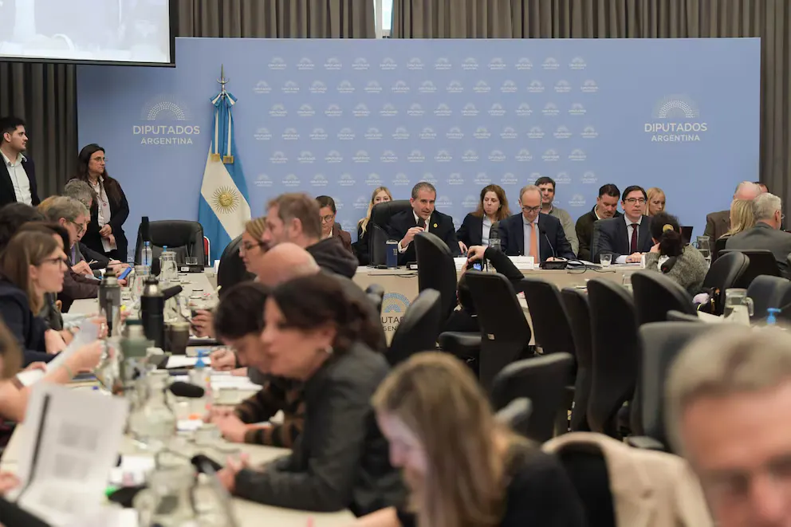

El Gobierno suspendió la reunión por el Presupuesto 2027 por falta de acuerdos
La Libertad Avanza suspendió la reunión en la que buscaba dictaminar el Presupuesto 2027 y se encamina a tratar el proyecto en extraordinarias.

Este lunes, La Libertad Avanza suspendió la última reunión de la Comisión de Presupuesto y Hacienda de la Cámara de Diputados de la Nación por no contar con las firmas necesarias para emitir dictamen sobre el Presupuesto 2027, por lo que postergó su cronograma de tratamiento y ahora busca alcanzar un acuerdo con los bloques aliados durante noviembre.
Con este nuevo plan, el oficialismo apunta a conseguir los respaldos para firmar el despacho el 12 de noviembre y llevar el proyecto al recinto el 25, aunque los plazos legislativos hacen prever que su tratamiento en el Senado deberá continuar durante las sesiones extraordinarias.
El cronograma original, anunciado por el presidente de la comisión, Alberto Benegas Lynch, contemplaba la firma del dictamen para la semana pasada. Sin embargo, las diferencias entre el oficialismo y los espacios dialoguistas, entre ellos el PRO, la Unión Cívica Radical (UCR) y distintas bancadas provinciales, impidieron avanzar con el despacho de mayoría y obligaron a suspender la reunión prevista.
En este escenario, durante los próximos diez días La Libertad Avanza buscará acercar posiciones con sus aliados, que reclaman modificaciones en distintos puntos del proyecto. Uno de los principales focos de discusión es el reparto de recursos a las provincias, especialmente las transferencias destinadas a las cajas previsionales que no fueron transferidas a la Nación, sobre las que los gobernadores exigen mayores precisiones respecto de los montos y los plazos de pago.
Los pedidos de los bloques dialoguistas incluyen además cambios impositivos y garantías de financiamiento para distintas áreas. El PRO reclama, entre otros puntos, que se salde la deuda de coparticipación con la Ciudad de Buenos Aires, una reducción de impuestos como el IVA a los huevos y sus derivados y el Impuesto a los Combustibles, y mayores controles sobre las concesiones viales. Por su parte, la UCR exige preservar la actualización por inflación de la Asignación Universal por Hijo (AUH) y garantizar los fondos para discapacidad y universidades.
A esas diferencias se suman los planteos de las bancadas provinciales, que buscan incorporar recursos para sus distritos. Los legisladores de Misiones reclaman fondos para su caja previsional, el sector tabacalero y obras viales, mientras que Córdoba y Salta también exigen partidas para infraestructura y el cumplimiento de compromisos previsionales.
La postergación del debate también está atravesada por compromisos de agenda que reducirán la actividad parlamentaria durante los próximos días. Desde el fin de semana, legisladores de distintos bloques comenzaron a viajar a Estados Unidos para participar como invitados o veedores de las elecciones legislativas de medio término, previstas para el martes 3 de noviembre. Entre ellos se encuentra el propio Benegas Lynch, cuya ausencia también demora la actividad de la comisión.
Una vez finalizados los comicios, se espera que los diputados regresen al país, aunque el calendario volverá a quedar condicionado por la visita del papa León XIV, que llegará a la Argentina el domingo 8 de noviembre y permanecerá en el país hasta el miércoles 11. Durante esos días, La Libertad Avanza y la oposición tendrán que reorganizar sus actividades parlamentarias en función de la agenda del Pontífice.
En paralelo, las negociaciones por el Presupuesto 2027 se desarrollan en un escenario de tensión con algunos aliados por otros proyectos legislativos. Uno de los casos es la Ley de Biocombustibles, cuyo tratamiento quedó frenado por diferencias entre los representantes de provincias productoras y legisladores bonaerenses que buscan preservar la participación de las pequeñas empresas del sector. Aunque ambos debates avanzan por carriles separados, el conflicto suma dificultades a una negociación en la que el Gobierno necesita reunir apoyos.
Por caso, la demora en Diputados compromete los tiempos para que el proyecto complete su recorrido en el Congreso durante el período de sesiones ordinarias. Según el cronograma que maneja el oficialismo, la intención es firmar dictamen el 12 de noviembre y llevar la iniciativa al recinto el 25, pero el Senado necesita al menos dos semanas para tratar un proyecto, con una instancia de comisión y un plazo de siete días entre la firma del dictamen y su llegada al recinto.
A ese escenario se suma que el jefe de Gabinete, Diego Santilli, comunicó a la Cámara baja que se presentará el miércoles 25 de noviembre para brindar su informe de gestión, lo que reduce las fechas disponibles para organizar nuevas sesiones. Por ese motivo, si Diputados avanza con el Presupuesto 2027 hacia fines de noviembre, el Senado deberá continuar su tratamiento durante las sesiones extraordinarias.
Además del proyecto de gastos y recursos, La Libertad Avanza pretende convocar a una sesión el 18 de noviembre para tratar la iniciativa de Defensa de la Soberanía Nacional, conocida como proyecto Malvinas. Sin embargo, su avance también depende de los acuerdos con la oposición y de que el oficialismo pueda garantizar el acompañamiento necesario para evitar que se incorporen al temario otros proyectos impulsados por los bloques opositores.